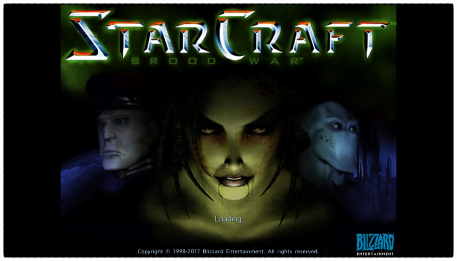

스타크래프트® 리마스터는 고전 명작 SF 전략 게임 스타크래프트를 완전히 업그레이드한 게임입니다.
<스타크래프트 원본과 찬사를 받은 확장판 스타크래프트: 브루드 워가 여러분을 찾아갑니다.

인류와 외계 종족들 사이의 분쟁을 그렸다.
워크래프트와 디아블로의 성공으로 재정적인 여유가 생긴 블리자드 엔터테인먼트에서는 그 동안에 숨겨온 우주를 배경으로 한 스페이스 오페라 게임을 만들어보고자 했다.
그렇게 만든 스타크래프트는 프리-알파 버전 때 테란이 없이 그냥 저그 vs 프로토스 구도였으며, UI도 지금과는 매우 많이 다르다(워크래프트 2 엔진을 그대로 쓴 수준이다.).
후에 블리자드에서 만들다 중간에 취소한 RTS 'Shattered Nations'를 기반으로[2] 테란을 추가하여 3종족 체제를 완성하였다.